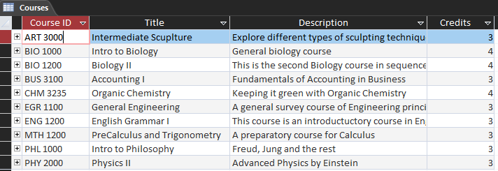
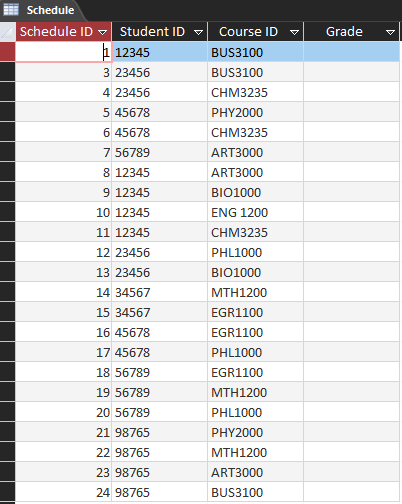
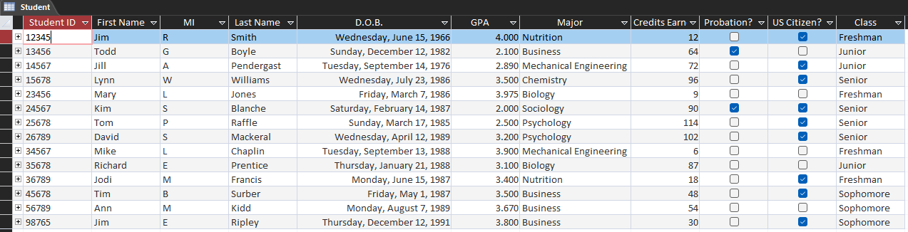
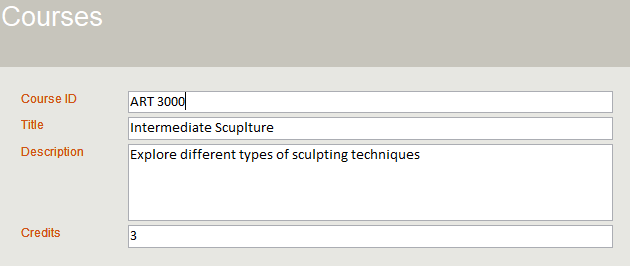
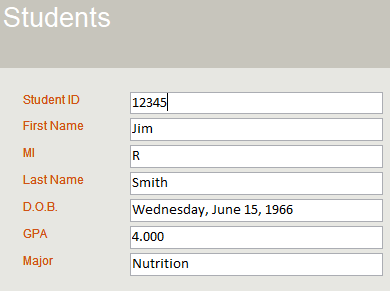

Project Overview
This project creates a relational database for an academic setting. It is built in Mircrosoft Access and includes a GUI for student management.
Download the Project Here
Section 1: Student Courses
This section gives an overview sample of student courses.

Section 2: Student Schedule
This section gives an overview sample of student schedules.

Section 3: Student Information
And this section gives an overview sample of student information.

Section 4: Total Credits Earned by GPA Range
This will return the toatal credits earned by students whose GPA is between 3.0 and 3.5.
SELECT SUM(Student.CreditsEarned) AS TOTAL_CREDITS_EARNED
FROM Student
WHERE Student.GradePointAverage BETWEEN 3.0 AND 3.5;Section 5: Average GPA by Major
This will return the average GPA for each major.
SELECT Student.Major, AVG(Student.GradePointAverage) AS AvgGPA
FROM Student
GROUP BY Student.Major;Section 6: Non-Citizen Business Students
Lists business majors who are not U.S. citizens
SELECT Student.Major, Student.USCitizen AS CITIZEN, Student.FirstName, Student.LastName, Student.StudentID
FROM Student
WHERE Student.Major='business' AND Student.USCitizen=false;Section 7: Non-Citizen Students on Probation
Lists non-citizen students who are on probation
SELECT Student.StudentID, Student.FirstName, Student.LastName, Student.USCitizen, Student.Probation
FROM Student
WHERE Student.USCitizen = No
AND Student.Probation = Yes;Section 8: Total Credits by Major
Calculates the total credits earned for each major.
SELECT Student.Major, SUM(Student.CreditsEarned) AS TotalCredits
FROM Student
GROUP BY Student.Major;Section 9: Student List ordered by Last Name
Sorts students into an ordered list by last name.
SELECT Student.StudentID, Student.LastName, Student.FirstName, Student.Major, Student.GradePointAverage
FROM Student
ORDER BY Student.LastName;Section 10: Student Course Enrollment
Shows each student's enrolled courses.
SELECT Student.StudentID, Student.FirstName, Student.LastName, Schedule.[Course ID], Courses.Title
FROM Student INNER JOIN (Courses INNER JOIN Schedule ON Courses.CourseID = Schedule.[Course ID]) ON Student.StudentID = Schedule.StudentID;Section 11: Courses GUI
You can create GUI's in Microsoft Access using Forms. This displays a form for Course input.

Section 12: Student GUI
While this displays a GUI for Student input.
